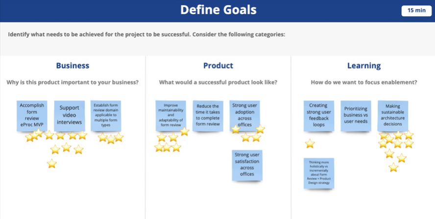

Overview
The mission
USCIS needed to digitize a paper-heavy process used in sensitive, multilingual, real-world environments. The experience had to feel clear, low-friction, and policy-aligned.
Getting Started
“We Need X, to Solve Y” – Stakeholders
Understanding the business objectives and needs was the first and foremost important step. Workshops and syncs were organized to discuss expectations and maintain alignment.
Meetings included: Roadmap Syncs, Problem Statement workshops, Risks & Mitigations, Brainstorm Sessions, and Design Studios.

Workshop with stakeholders.
Discovery Research
Identify research objectives
- Learn how Immigration officers navigate reviewing multiple paper applications
- Uncover hidden challenges and inefficiencies in the process
- Understand the interation betwwen officers and refugee applicants during interview
Context
What made this process unique
Language mediation
Officers often communicated through interpreters, which changed pacing and comprehension.
Family complexity
Larger family groups increased completion time and required clearer coordination.
Handwriting corrections
Paper reviewers corrected typos, adding more time in critical environment.
Design Process
How I approached the design
Motto: Keep it lean
“Keep it lean” was the motto from beginning. The challenge was not just turning a paper application into a digital one, but also digitizing the overall process regulated by policy, the officers’ ad-hoc methods, and motivated behaviors to make the process more efficient.
Starting with wireframes and utilizing components from USWDS (U.S. Web Design System), the idea was to showcase multiple applications (for each family member) simultanesouly on the screen.
Protoypes & Usability Testing; Test & Reiterate
By designing a functional prototype quickly piece by piece, this allowed me to gather feedback from users, for stakeholders to test the new application, and refine the solution to meet real-world needs.
Revise & Retest
Validated assumptions helped the overall design. Any negative feedback were redesigned and refined for the pilot.
Artifacts
Design moments
Impact
Pilot & Liftoff!
After a successful pilot with a various group of immigration officers, we launched our MVP. The feedback was very positive with officers noting that it felt less tedious and stressful not having multiple papers spread across a desk in front of them. We hit our OKRs and MVP goals:
Users received more cues and clearer interaction support.
35% decrease in completion time allowed for multi-tasking. Current average time spent: 44 mins (for families of up to 4 members).
The solution fit existing requirements while improving usability.
Biggest Challenges
Remote locations can impact user experience
Hardware and software usage can be impacted by disruptions to internet in remote locations such as El Salvador. Issues observed:
- Low internet speed lower than 60mbp
- Lags between clicking to access next step / screen
- Signature not saving due to internet disruption
Early adopters pushback
Our team encountered offices that weren't ready to utilize a new technology and felt confident with their current paper processes. Learning a new interface or tool can be a tedious task for those working in critical, high-stress environments.
Conclusion
Takeaway: Real change is possible in government
The path to digitization for a government agency can be uniquely challenging and a long journey! The process involves navigating a complex landscape of compliance, stringent security standards, and bureaucratic processes.
While the benefits were clear and the outcome was wanted by all parties, the process of doing so required careful consideration of immigration regulations, multiple layers of approval, and adhering to obsolete and restrictive policies.
An MVP in this context helps balance innovation with caution, allowing teams to develop a core digital solution that meets the essential needs while providing a framework for testing and feedback. It ensures that vital features such as automated workflows, real-time data validation, and secure storage are introduced early, making it easier to manage the unique governmental constraints.